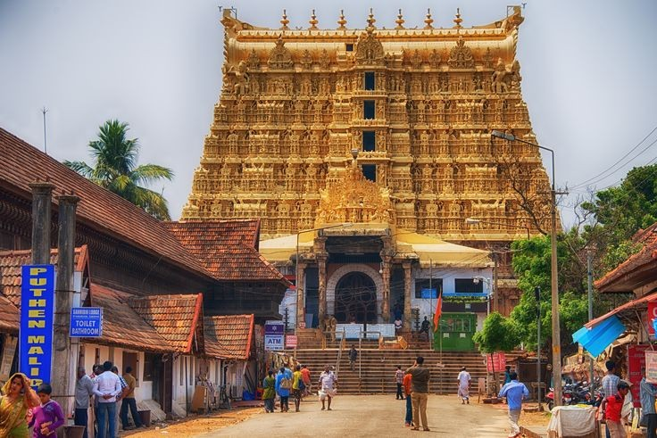

Located inside the East Fort in Thiruvananthapuram, the capital city of the State of Kerala in India
is the Sree Padmanabha Swamy Temple dedicated to Lord Vishnu. This temple is a blend of the Kerala
and Dravidian styles of architecture. It is believed to be the world’s richest temple.

The history of Sree Padmanabhaswamy Temple dates back to 8th century. It is one of the 108 sacred Vishnu
temples or Divya Desams in India. Divya Desams are the holiest abodes of Lord Vishnu that are mentioned
in the works of the Tamil Azhvars (saints). The presiding deity of this temple is Lord Vishnu, reclining
on Anantha, the hooded Serpent.
Located adjacent to Padmanabhaswamy Temple, Kuthiramalika Palace Museum is the rarest specimen of workmanship.
Built by Maharaja Swathi Balarama Varma, this palace displays valuable collections of royal family.
Beside the rich collection that it displays, this museum is an exemplary example of traditional Travancore-style
architecture.Intricate wood carvings and distinctive patterns constitute a masterpiece of its kinds. Overhanging
attics, pillar-lined courtyards and sloping roofs contribute to the exclusive look of the museum.
Visitors can expect a display of a collection, including Belgian mirrors, paintings, Kathakali mannequins, exquisite
traditional furniture. The two royal thrones; one manufactured of Bohemian crystals, embossed with an emblem of
‘Conch’ on the backrest and the other made of ivory are the prime attractions of the museum. Marble-made idols
and sculptures, musical instruments and the alcove used by Swami Thirunal have also been kept in the showcase.
An illusion portrait by veteran painter Sveroslav Roerich is another attractive feature here.
Kuthiramalika, which is often called as Puthenmalika Palace Museum remains open for visitors from 8.30 AM to
1.00 PM and 3.00 PM to 5.30 PM. Monday is the day that it seeks rests from all week-long visits. The best time
of the year to visit Kuthiramalika is January. Commemorating the famous Swathi Thirunal, a lively music festival
is conducted each year between 6 and 12 January.
Named after Lord Napier, this art and history museum was established in 1855. An exemplary example of gothic
architecture-style, Napier Museum boasts greatly of its natural air conditioning system. It houses an exceptional
collection of ornaments, bronze idols, chariots, and ivory carvings. The museum offers insight into the rich and
glorious culture and history of Kerala.
The great contribution made by Rajput, Mughal, and Tanjore schools of art along with the skillful work by several
Chinese, Japanese, and Tibetan artists can be found in here. The Japanese leather figures depicting the epics of
Mahabharata and Ramayana catch the eyes of tourists.
Napier Museum is certainly one of the most visited tourist places in Trivandrum. Situated in the Museum compound,
the ground floor of this place houses India’s oldest zoological garden. Another important feature is Sree Chithra
Art Gallery, established by Maharaja Chithira Thirunalin in 1935. The gallery contains epic works from much famed
Raja Ravi Varma and Nicholas Roerich.
Amid a well-laid-out garden, the zoological park houses a lake and boat club. The park offers an excellent day
outing for children and adults alike. It boasts of 75 different species of animals and birds from India, Ethiopia,
and Australia. It is also home to the Lion-tailed Macaque, Nilgiri Tahr, Manipur deer, Indian Rhino, Nilgiri Langur,
Asiatic Lion and the Royal Bengal Tiger. There is prominent fauna found here along with habitats of giraffe,
hippopotamus, zebra, and Cape buffalo.
The captivating hill station of Ponmudi is at a distance of 61 kms from Trivandrum. It is situated 915 meters above
sea level and offers respite from the heat and hustle and bustle of other cities. Its narrow, meandering pathways, dark
woods and soothing climate make it a splendid location to spend a holiday at. A multitude of colourful butterflies, springs
and rapids, myriad species wild flowers and the deer park nearby are the key attraction of this fascinating hill station.